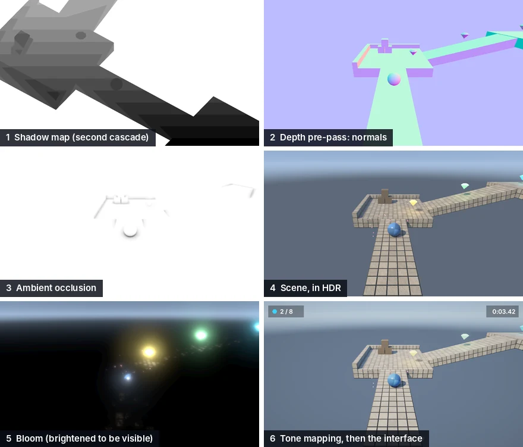

In pratica
Engine: The Renderer#
The previous chapter showed a game that never mentions a render pass. This one opens the part of the LearnMetal Engine that does all the mentioning: the renderer. It draws whatever is in the scene, in six steps, and every step is a chapter you have already read.
From a scene to draw calls#
A scene is a collection of entities; the GPU wants a list of draw calls. The renderer starts every frame by walking the scene once and copying out what it needs, a step often called extraction. It finds the camera and computes its matrices. It collects the lights. And for every entity that has a mesh, it records one item: the mesh, the material, the world matrix, and the bounding box of the mesh in world space.
Then it throws most of the work away before doing it. Items whose bounding box lies entirely outside the camera's view are dropped (frustum culling). The opaque ones that are left are sorted so that items with the same material and the same mesh sit next to each other, and each such run becomes a single draw call:
var first = 0
while first < sorted.count {
// Every run of the same mesh and material becomes one instanced draw.
instances.removeAll(keepingCapacity: true)
var next = first
while next < sorted.count && sorted[next].mesh === sorted[first].mesh && sorted[next].material === sorted[first].material {
instances.append(InstanceData(model: sorted[next].world, normalMatrix: sorted[next].world.normalMatrix,
tint: sorted[next].tint))
next += 1
}
batches.append(Batch(mesh: sorted[first].mesh, material: sorted[first].material,
instances: allocator.copyArray(instances), count: instances.count))
first = next
}
size_t first = 0;
while (first < items.size()) {
// Every run of the same mesh and material becomes one instanced draw.
instances.clear();
size_t next = first;
while (next < items.size() && items[next]->mesh == items[first]->mesh && items[next]->material == items[first]->material) {
instances.push_back(gpu::InstanceData{items[next]->world, normalMatrix(items[next]->world), items[next]->tint});
next++;
}
Batch batch;
batch.mesh = items[first]->mesh;
batch.material = items[first]->material;
batch.instances = allocator().copyArray(instances.data(), instances.size());
batch.count = uint32_t(instances.size());
batches.push_back(batch);
first = next;
}
This is the Instancing chapter, applied automatically. The game never asks for it: forty identical floor tiles are forty entities, and one draw call. A lone object is simply a batch of one, so the shaders have a single code path:
vertex MeshVertexOut vertex_mesh(MeshVertexIn in [[stage_in]],
uint instanceID [[instance_id]],
constant PassUniforms &pass [[buffer(LMBufferPass)]],
constant InstanceData *instances [[buffer(LMBufferInstances)]]) {
InstanceData instance = instances[instanceID];
float4 world = instance.model * float4(in.position, 1.0);
MeshVertexOut out;
out.position = pass.viewProjection * world;
out.worldPosition = world.xyz;
out.normal = (instance.normalMatrix * float4(in.normal, 0.0)).xyz;
out.tangent = float4((instance.model * float4(in.tangent.xyz, 0.0)).xyz, in.tangent.w);
out.uv = in.uv;
out.tint = instance.tint;
out.viewDepth = -(pass.view * world).z;
return out;
}
Transparent items are the exception. They are sorted from the farthest to the nearest instead, because blending depends on the order.
Memory that lasts one frame#
Instance matrices, camera uniforms, the vertices of the interface, particles: a great deal of data is rebuilt every frame and is useless afterwards. Creating a Metal buffer for each piece would be slow, and reusing one buffer is dangerous, because the GPU is usually still drawing the previous frame when the CPU starts filling the next.
The engine uses one large buffer per frame and hands out pieces of it in order. Allocating is adding to an offset:
func allocate(size: Int, alignment: Int = 256) -> Allocation {
var start = (offset + alignment - 1) / alignment * alignment
if start + size > capacity {
// Out of room: switch to a larger buffer. Earlier allocations of this frame
// stay valid, because the old buffer is kept alive until the next reset.
retired.append(buffer)
capacity = (capacity + size) * 2
buffer = FrameAllocator.makeBuffer(device, capacity)
start = 0
}
offset = start + size
return Allocation(buffer: buffer, offset: start, pointer: buffer.contents() + start)
}
Allocation allocate(size_t size, size_t alignment = 256) {
size_t start = (offset_ + alignment - 1) / alignment * alignment;
if (start + size > capacity_) {
// Out of room: switch to a larger buffer. Earlier allocations of this frame
// stay valid, because the old buffer is kept alive until the next reset.
retired_.push_back(buffer_);
grow((capacity_ + size) * 2);
start = 0;
}
offset_ = start + size;
return Allocation{buffer_.get(), start, static_cast<uint8_t*>(buffer_->contents()) + start};
}
There are three of these buffers, used in turn, and a semaphore that starts at three. A frame takes one unit before it touches anything and gives it back when the GPU reports that the frame is finished:
// At most three frames may be waiting for the GPU. If it is behind, wait here.
frameSemaphore.wait()
frameIndex = (frameIndex + 1) % Renderer.framesInFlight
allocator.reset()
// ... encode every pass ...
let semaphore = frameSemaphore
commandBuffer.addCompletedHandler { _ in semaphore.signal() }
commandBuffer.commit()
// At most three frames may be waiting for the GPU. If it is behind, wait here.
dispatch_semaphore_wait(frameSemaphore_, DISPATCH_TIME_FOREVER);
frameIndex_ = (frameIndex_ + 1) % kFramesInFlight;
allocator().reset();
// ... encode every pass ...
dispatch_semaphore_t semaphore = frameSemaphore_;
commandBuffer->addCompletedHandler([semaphore](MTL::CommandBuffer*) { dispatch_semaphore_signal(semaphore); });
commandBuffer->commit();
By the time a buffer comes around again, the frame that used it is guaranteed to be done.
Pipelines on demand#
A render pipeline state fixes the vertex and fragment functions, the pixel formats, the sample count and the blending. The combinations multiply quickly: the same mesh shader is used with a color target, without one for shadows, with and without blending. Listing every combination by hand is the kind of code that is always one entry short.
Instead, each draw describes what it needs, and a cache creates the pipeline the first time that description appears:
var sky = PipelineDescription()
sky.vertexFunction = "vertex_sky"
sky.fragmentFunction = "fragment_sky"
sky.colorFormat = Renderer.sceneFormat
sky.depthFormat = Renderer.depthFormat
sky.sampleCount = targetSamples
if let pipeline = shaders.pipeline(sky) {
encoder.setRenderPipelineState(pipeline)
encoder.setCullMode(.none)
encoder.drawPrimitives(type: .triangle, vertexStart: 0, vertexCount: 3)
stats.drawCalls += 1
}
PipelineDescription sky;
sky.vertexFunction = "vertex_sky";
sky.fragmentFunction = "fragment_sky";
sky.colorFormat = kSceneFormat;
sky.depthFormat = kDepthFormat;
sky.sampleCount = targetSamples_;
if (MTL::RenderPipelineState* pipeline = shaders_.pipeline(sky)) {
encoder->setRenderPipelineState(pipeline);
encoder->setCullMode(MTL::CullModeNone);
encoder->drawPrimitives(MTL::PrimitiveTypeTriangle, NS::UInteger(0), NS::UInteger(3));
stats.drawCalls++;
}
The first frame creates the pipelines the scene needs and is a little slower; after that the cache answers from a table.
The cache has a second use. The engine compiles its shaders from the .metal files when it starts, and every thirty frames it checks whether one of them has changed on disk. If so it compiles them again and empties the cache. Save a shader while the game is running and the picture changes; if the new version has an error, the message is logged and the old shaders stay.
The passes#
| Pass | Draws into | |
|---|---|---|
| 1 | Shadow maps | one slice of a depth texture array per cascade |
| 2 | Depth pre-pass | depth and view-space normals |
| 3 | Ambient occlusion, then a blur | a one-channel texture |
| 4 | Scene | a multisampled HDR texture |
| 5 | Bloom | a chain of half-size textures |
| 6 | Tone mapping and interface | the drawable |

Shadows in cascades#
The Shadow Mapping chapter used one shadow map for a small scene. Stretch one map over everything a camera can see and its texels become far too large to draw a sharp edge. The usual answer is to cut the view distance into slices and give each slice its own map: small and sharp near the camera, large and soft far away. These are cascades, and the engine uses four.
Fitting a map to a slice has one subtlety. The obvious fit, a box around the slice's corners, changes shape whenever the camera turns, and the shadow edges crawl. A sphere around the slice does not care which way the camera faces. Snapping its center to whole texels removes the remaining shimmer when the camera moves:
// Enclose the slice in a sphere. A sphere looks the same from every direction,
// so the area the cascade covers does not change when the camera turns.
var center = Vec3(0, 0, 0)
for corner in corners { center += corner }
center /= 8
var radius: Float = 0
for corner in corners { radius = max(radius, simd_distance(center, corner)) }
radius = ceil(radius * 16) / 16
// Snap the center to whole shadow-map texels, measured in the light's space.
// Without this, shadow edges shimmer as the camera moves.
let texel = 2 * radius / Float(settings.resolution)
var lightSpaceCenter = lightRotation.transformPoint(center)
lightSpaceCenter.x = floor(lightSpaceCenter.x / texel) * texel
lightSpaceCenter.y = floor(lightSpaceCenter.y / texel) * texel
let snappedCenter = lightRotationInverse.transformPoint(lightSpaceCenter)
// Enclose the slice in a sphere. A sphere looks the same from every direction,
// so the area the cascade covers does not change when the camera turns.
Vec3 center{0, 0, 0};
for (Vec3 corner : corners) center += corner;
center /= 8.0f;
float radius = 0.0f;
for (Vec3 corner : corners) radius = std::max(radius, simd::distance(center, corner));
radius = std::ceil(radius * 16.0f) / 16.0f;
// Snap the center to whole shadow-map texels, measured in the light's space.
// Without this, shadow edges shimmer as the camera moves.
float texel = 2.0f * radius / float(settings.resolution);
Vec3 lightSpaceCenter = transformPoint(lightRotation, center);
lightSpaceCenter.x = std::floor(lightSpaceCenter.x / texel) * texel;
lightSpaceCenter.y = std::floor(lightSpaceCenter.y / texel) * texel;
Vec3 snappedCenter = transformPoint(lightRotationInverse, lightSpaceCenter);
In the fragment function, a pixel picks its cascade by its distance from the camera, and looks the shadow map up from a point pushed slightly off the surface:
// The first cascade whose slice of the view contains this point.
uint cascade = frame.cascadeCount - 1;
for (uint i = 0; i < frame.cascadeCount; i++) {
if (viewDepth < frame.cascadeSplits[i]) {
cascade = i;
break;
}
}
// Look up the shadow map from a point pushed slightly off the surface along its
// normal, by an amount proportional to the size of a texel. This removes "shadow
// acne" without the detached shadows a large depth bias would cause.
float3 offsetPosition = worldPosition + normal * (frame.cascadeTexelSize[cascade] * frame.shadowNormalOffset);
float4 clip = frame.cascadeViewProjection[cascade] * float4(offsetPosition, 1.0);
float2 uv = clip.xy * float2(0.5, -0.5) + 0.5; // NDC y is up, texture v is down
float depth = clip.z - frame.shadowBias;
Moving the lookup point along the normal, instead of adding a large bias to the depth, is what keeps shadows attached to the objects that cast them. Nine comparison samples around uv then soften the edge, as in the original chapter.
Materials with holes need one more thing. A fence drawn with a cut-out texture must cast a shadow with holes in it, so for those materials the shadow pass runs a tiny fragment function whose only job is to discard_fragment() where the texture is transparent.
Ambient occlusion#
SSAO needs the depth and the normal of every pixel before the scene is shaded. In a deferred renderer those are already there. In a forward renderer they have to be drawn first, so pass 2 draws all opaque geometry into a depth texture and a normal texture, and pass 3 turns them into an occlusion value per pixel and blurs it. The main pass then reads that texture by pixel position.
The price is one more trip through the opaque geometry. It can be switched off with one setting, and then passes 2 and 3 do not run at all.
The main pass#
The scene is drawn in HDR (rgba16Float), with four samples per pixel:
let pass = MTLRenderPassDescriptor()
pass.colorAttachments[0].loadAction = .clear
pass.colorAttachments[0].clearColor = MTLClearColor(red: 0, green: 0, blue: 0, alpha: 1)
if targetSamples > 1, let multisample = sceneColorMultisample {
// Draw into the multisampled texture; at the end of the pass the GPU averages
// the samples of each pixel into the plain texture ("resolve"). Only that is kept.
pass.colorAttachments[0].texture = multisample
pass.colorAttachments[0].resolveTexture = sceneColor
pass.colorAttachments[0].storeAction = .multisampleResolve
} else {
pass.colorAttachments[0].texture = sceneColor
pass.colorAttachments[0].storeAction = .store
}
pass.depthAttachment.texture = sceneDepth
pass.depthAttachment.loadAction = .clear
pass.depthAttachment.clearDepth = 1
pass.depthAttachment.storeAction = .dontCare // nobody reads it after this pass
auto pass = NS::TransferPtr(MTL::RenderPassDescriptor::alloc()->init());
MTL::RenderPassColorAttachmentDescriptor* color = pass->colorAttachments()->object(0);
color->setLoadAction(MTL::LoadActionClear);
color->setClearColor(MTL::ClearColor(0.0, 0.0, 0.0, 1.0));
if (targetSamples_ > 1) {
// Draw into the multisampled texture; at the end of the pass the GPU averages
// the samples of each pixel into the plain texture ("resolve"). Only that is kept.
color->setTexture(sceneColorMultisample_.get());
color->setResolveTexture(sceneColor_.get());
color->setStoreAction(MTL::StoreActionMultisampleResolve);
} else {
color->setTexture(sceneColor_.get());
color->setStoreAction(MTL::StoreActionStore);
}
MTL::RenderPassDepthAttachmentDescriptor* depth = pass->depthAttachment();
depth->setTexture(sceneDepth_.get());
depth->setLoadAction(MTL::LoadActionClear);
depth->setClearDepth(1.0);
depth->setStoreAction(MTL::StoreActionDontCare); // nobody reads it after this pass
Neither the multisampled color texture nor the depth texture is needed after the pass. On Apple GPUs the engine creates both as memoryless: they exist only in the GPU's tile memory while the pass runs, as the Tile-Based GPUs chapter explains, and a 4x multisampled HDR target that would have cost tens of megabytes costs nothing.
Inside the pass the order matters:
- Opaque objects, writing depth.
- The sky, a single triangle placed exactly on the far plane and drawn with a "less or equal" depth test. Only the pixels nothing else covered run its fragment function. Drawing it first would shade the whole screen and then cover most of it.
- Transparent objects, far to near, testing depth but not writing it.
- Particles and debug lines.
The fragment function is the one from the PBR chapters, with a loop over the lights. This is forward rendering: one function computes a pixel completely. It fits Apple GPUs well, because they find the visible surface of each pixel before running any fragment function, so hidden surfaces cost nothing; and it works with multisampling and with transparency without special cases.
Light from the sky#
The sky is not a texture. It is a few lines of shader code: a gradient from the horizon to the zenith, the ground below, a glow around the sun. When the engine starts, it renders that sky into a cubemap, one face at a time, and then filters the cubemap into the maps that image-based lighting needs:
// 2. Diffuse irradiance.
for face in 0..<6 {
capture.face = UInt32(face)
renderFace(commandBuffer, target: irradianceMap, face: face, mip: 0, fragmentFunction: "fragment_irradiance",
capture: capture, frame: frame, source: sky)
}
// 3. Reflections: mip 0 is a mirror, the last mip is fully rough.
for mip in 0..<Environment.prefilteredMips {
capture.roughness = Float(mip) / Float(Environment.prefilteredMips - 1)
for face in 0..<6 {
capture.face = UInt32(face)
renderFace(commandBuffer, target: prefilteredMap, face: face, mip: mip, fragmentFunction: "fragment_prefilter",
capture: capture, frame: frame, source: sky)
}
}
// 2. Diffuse irradiance.
for (int face = 0; face < 6; face++) {
capture.face = uint32_t(face);
renderFace(commandBuffer, irradiance_.get(), face, 0, "fragment_irradiance", capture, frame, sky_.get());
}
// 3. Reflections: mip 0 is a mirror, the last mip is fully rough.
for (int mip = 0; mip < kPrefilteredMips; mip++) {
capture.roughness = float(mip) / float(kPrefilteredMips - 1);
for (int face = 0; face < 6; face++) {
capture.face = uint32_t(face);
renderFace(commandBuffer, prefiltered_.get(), face, mip, "fragment_prefilter", capture, frame, sky_.get());
}
}
Each call is a small render pass into one face and one mip level of a cubemap. Because the lighting is computed from the same function that draws the visible sky, reflections and ambient light always agree with what the player sees. Change the sky's colors or turn the sun, and the engine notices and runs these passes again.
Bloom and the final pass#
Bloom keeps the parts of the image brighter than a threshold, and blurs them through a chain of textures, each half the size of the one before: down the chain, then back up, adding each level to the larger one. Wide and narrow glows pile up, for the price of a few very small passes.
The last pass adds the bloom to the scene, applies exposure and the tone mapping curve, and writes to the drawable, whose sRGB format takes care of gamma. The 2D interface is drawn in the same pass, after tone mapping: the orange of a title should be the orange the designer picked, not what a filmic curve makes of it.
Seeing what it does#
Every pass has a label and the main pass is divided into debug groups, so a frame captured in Xcode's GPU debugger reads like the table above. That costs nothing and saves hours, as the Debugging chapter argued.
For everything else there is engine.debug, which draws lines in 3D for one frame: a line, a box, a sphere, the axes of a transform. F2 uses it to show every collider in the scene.
The next chapter leaves the renderer and builds the game.